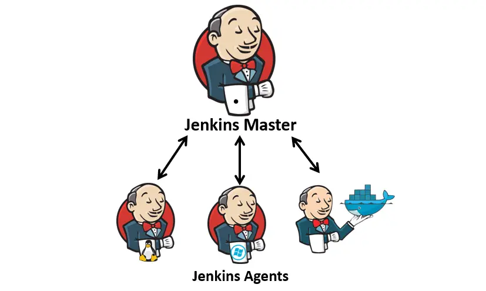
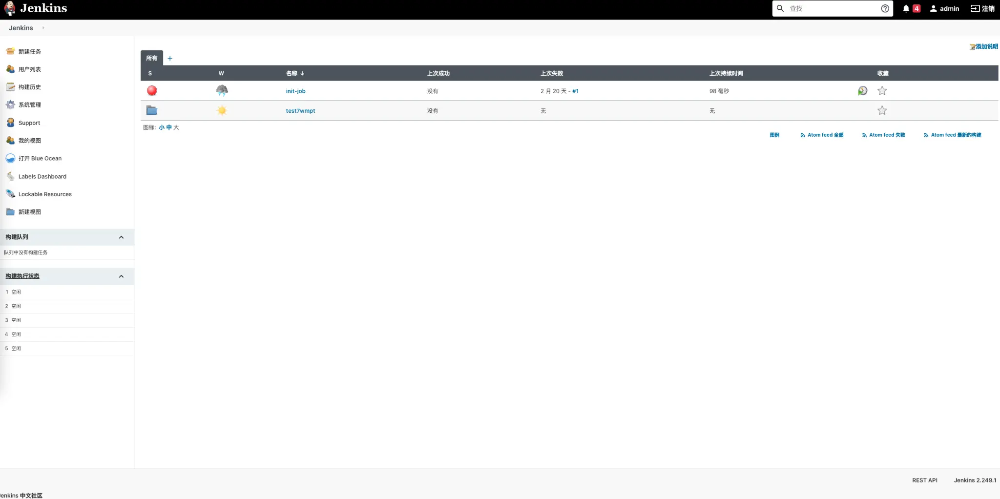
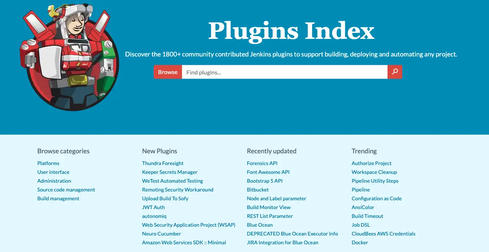
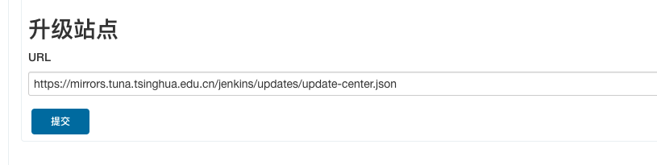
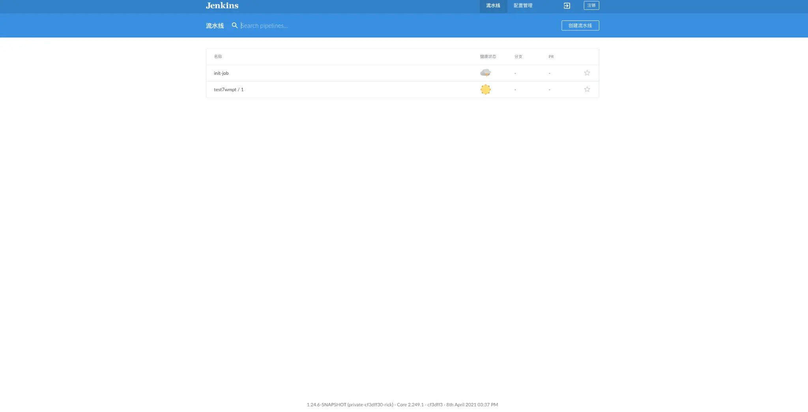
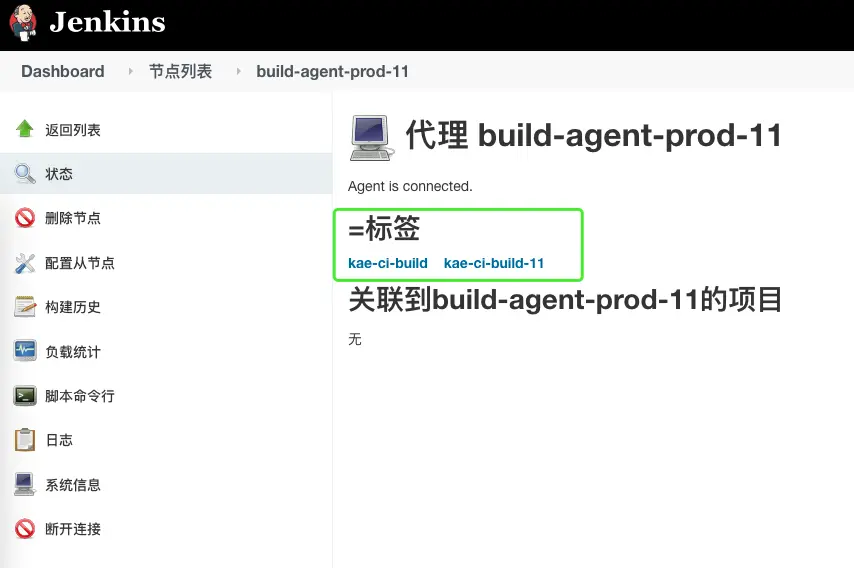

Tooling Platform - Jenkins
Introducing Jenkins
- Jenkins was formerly Hudson, an open-source continuous integration tool written in Java.
- Hudson was started by Sun Microsystems in 2004, and its first version was released on java.net in 2005.
- From 2007 Hudson held a leading position in the build space.
- In 2010 Oracle's acquisition of Sun brought ownership questions for Hudson. Despite many agreements between the main project contributors and Oracle, one key issue remained: the trademark name "Hudson".
- Oracle declared in December 2010 that it owned the name and applied for the trademark. So on January 11, 2011, a vote was called to rename the project from "Hudson" to "Jenkins".
On January 29, 2011 the proposal was approved by a community vote and the Jenkins project was created.
Where Jenkins Fits
- Integrate with svn/git clients to download and check out source code
- Integrate with build tools such as maven/ant/gradle/npm to compile, package, and unit test source code
- Integrate with sonarqube for source quality checks (code smells, complexity, newly introduced bugs, and so on)
- Integrate with SaltStack/Ansible for automated deployment and release
- Integrate with Jmeter/Soar/Kubernetes/...
- Define custom plugins or scripts invoked through Jenkins with parameters
- One can say Jenkins is flexible with abundant plugin resources, and routine operations work can all be automated
Jenkins Architecture

- The Master node acts as coordinator, responsible for communicating with execution nodes and dispatching tasks
- Agent nodes are the task executors
Installing Jenkins
Option one: the native package
apt-get install jenkins
Option two: run jenkins.war directly
Option three: install with Docker or Kubernetes
docker run --security-opt apparmor=unconfined --security-opt seccomp=unconfined -p 8080:8080 --name myjenkins -v jenkins_home:/var/jenkins_home -v jenkins_downloads:/var/jenkins_home/downloads jenkins/jenkins:lts
The Jenkins Web UI
Installing Jenkins plugins

Installing Jenkins Plugins
Option one: download from the official site
https://plugins.jenkins.io/ — install with the jenkins-plugin-cli command

Option two: install from the management page
Go into the Jenkins admin UI: Manage Jenkins -> Manage Plugins -> Advanced -> update the Update Site to: https://mirrors.tuna.tsinghua.edu.cn/jenkins/updates/update-center.json

The Jenkins Blue Ocean UI

How Master and Agent Communicate
- SSH
The Master can connect directly to the Agent over SSH, with an SSHD service running on the Agent.
- JNLP
The Agent can reach the Master. The Agent needs a JVM to run, and the Master needs to open port 50000 (the default) for Agent communication.
- WebSocket
The Agent can reach the Master. The Agent needs a JVM to run.
Selecting Agents by Label
- What a label is
When the number of agents grows, how do you know which agents support JDK 8 and which support a Node.js environment?
- What a label does
It sets a filtering alias on an agent node, so that when a job runs later the execution node can be assigned by label name.

Two Kinds of Pipeline
- FreeStyle Project
The whole process is broken into stages such as source code management, build triggers, build environment, build, and post-build actions, all operated through the UI.
- Pipeline Project
A Jenkinsfile written in the Groovy language defines the pipeline, which is more flexible.